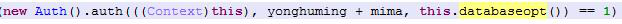
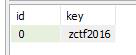
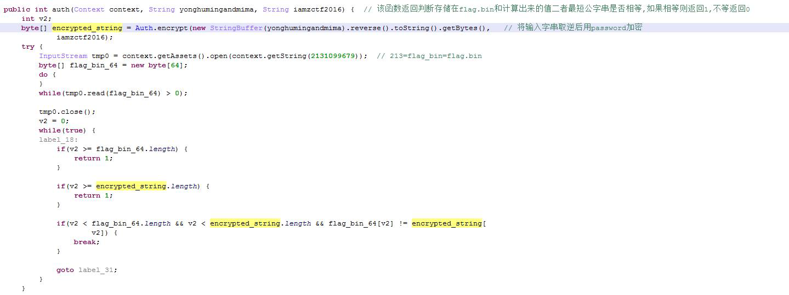
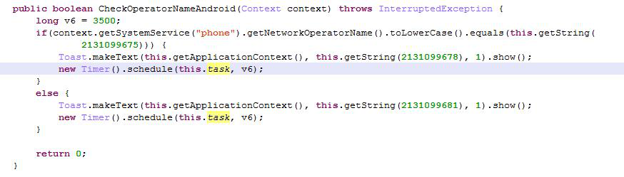
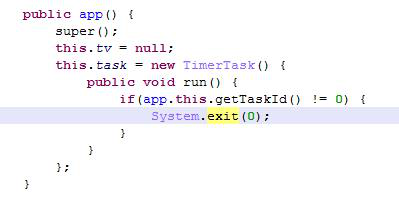
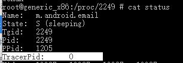
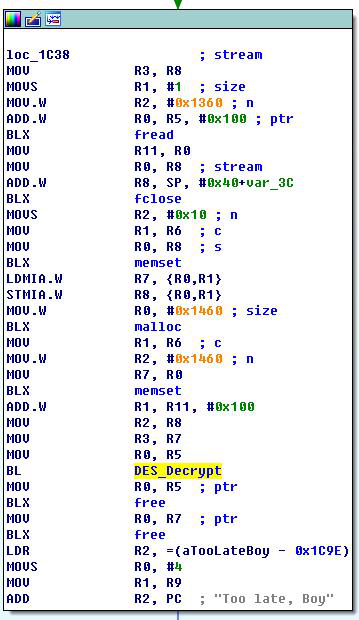
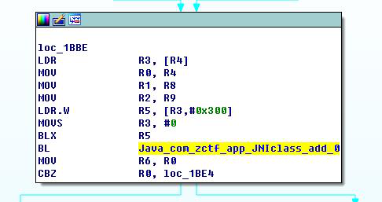
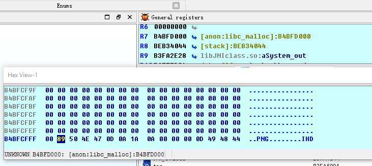
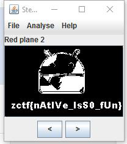

先做笔记,最后整理成题解.
首先对APK的Java层代码进行分析.入口的逻辑在Login.attemptLogin函数中该函数调用Auth.auth对用户名密码进行校验.

此处校验有一个读取数据库的函数databaseopt,其逻辑就在下边定义,但是其实不用看,key.db文件就在程序目录中,用随便一个数据库查看器可以看到唯一的键值

所以,auth函数参数0=context,1=yonghuming+mima,2=”zctf2016”
下面分析Auth和auth逻辑.

Auth有auth,encrypt和decrypt三个函数,后二者是des加解密.auth的逻辑恢复的有些混乱,分析得到黄色部分需要与apk资源中的flag.bin内容进行比较.用python对flag.bin进行des解密还原.盗用程序自带的DES解密,得到结果
|
|
}sihttoN{ftcz,根据原来程序的逻辑,这段是取逆之后的用户名加密码即原来应该为zctf{Notthis},用户名为zctf,密码{Notthis}.到此这部分结 束.这一部分目前没有什么影响,因为不计算密码直接改Smali逻辑也可以绕过.检查密码正确后会启动一个新的Activity,密码作为extra参数传给这个Activity,在后面会用到,按下不表.
束.这一部分目前没有什么影响,因为不计算密码直接改Smali逻辑也可以绕过.检查密码正确后会启动一个新的Activity,密码作为extra参数传给这个Activity,在后面会用到,按下不表.
接下来考察打开的app这个Activity,其中又增加了新的模拟器检验

task中会结束进程

修改Smali绕过这处检验
if-eqz改为if-nez,绕过此处.
接下来绕过add函数,这个函数是native,检查proc/procid/status中第五项,在android的环境中是tracer

通过检查该项值判断是否被调试,然而没有什么卵用直接Java层绕过…….话说这个函数伪装成add还传入两个参数,但是并没有用.
接下来pushbottom函数将bottom拷贝到/data/data/com.zctf.app/files/目录下,接下来app调用native函数sayHelloInc,将pass={Notthis}作为参数传入.Java静态部分完成,接下来IDA考察这个函数的功能.

上图是关键的一个分支,注意有一个DES解密函数跳转,这里R7储存的是malloc到堆上边的地址,指向解密后的内容,随后两个free,之后就too_late了,所以要在des执行后,free执行前获得r7指向的内存.需要进行动态调试.

首先考察这里的静态代码,又是熟悉的假add函数,在动态attach上去之后首先修改这里,否则会被发现调试退出,在mov r6,r0下断点强行改变r0=0,接下来执行到free之前,看r7地址,G到内存

看到了熟悉的PNG头,从这里开始向下把内存内容dump出来.
(这里插两句,ida的android_server只支持arm所以一开始静态分析最好直接从arm开始,该应用lib中包含了x86我没忍住就看了,后来耽误很多时间重新看arm.另外,程序不用的so IDA是检查不到module的,在attach时候加一个”载入新库停下来”然后在其中下断点.)
将复制的内容另存为png图像,使用stegSolve打开图片查图层得到frog(啥?)
